期刊简介
| 期刊名称 | NAT COMMUN/Nature Communications |
ISSN |
2041-1723 |
| 出版社/管理机构 | 杂志由 Nature Publishing Group 出版或管理 |
| 出版国家/地区 | United Kingdom 英国 |
| 出版周期 | Monthly |
| 出版年份 | 2010 |
是否OA(Open Access) |
是 |
| 年文章数 | 5469 |
| 审稿速度 | 平均4.17月（非官方数据） |
| 投稿命中率 | 17.05%（非官方数据） |
| 自引率 | 2.9 % |
| JCR分区 | MULTIDISCIOLINARY SCIENCES-SCIEQ1 |
中科院分区 |
大类：综合性期刊 1区[Top] 小类：综合性期刊 1区 |
| 被收录情况 | Science Citation Index|Science Citation Index Expanded|Current Contents - Agriculture, Biology & Environmental Sciences|Current Contents - Life Sciences|Current Contents - Physical, Chemical & Earth Sciences|Zoological Record|BIOSIS Previews |
影响指数
| MedSci期刊指数 | 81.615（MedSci实时期刊指数） | 77.316 （5年期刊指数） |
MedSci智能点评 |
|
h-index |
248 |
h5-median |
暂无数据 |
| 期刊影响指数 | 12.298 |
期刊影响指数 |
|
CiteScore值 |
18.1 |
| CiteScore分区 |
Biochemistry, Genetics and Molecular Biology - General Biochemistry, Genetics and Molecular Biology Physics and Astronomy - General Physics and Astronomy 9/215 Chemistry - General Chemistry 13/371 |
| CiteScore趋势 |
Latest Research articles
| 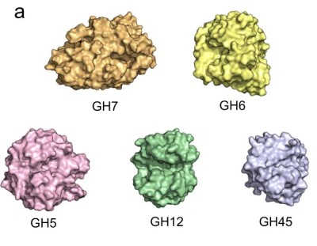 | 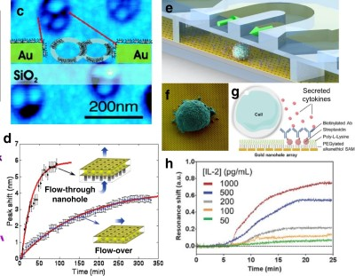 | 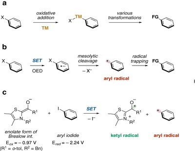 |
| Physical constraints and functional plasticity of cellulases | Nanophotonic biosensors harnessing van der Waals materials | Aryl radical-mediated N-heterocyclic carbene catalysis |
| 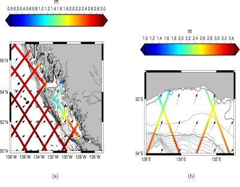 | 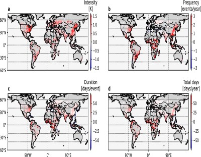 | 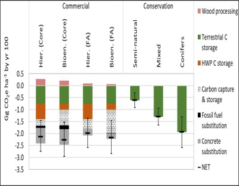 |
| Global coastal attenuation of wind-waves observed with radar altimetry | Large model structural uncertainty in global projections of urban heat waves | Commercial afforestation can deliver effective climate change mitigation under multiple decarbonisation pathways |
| 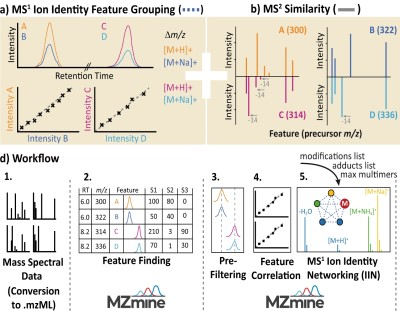 | 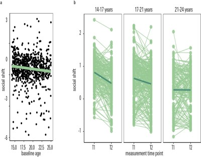 | 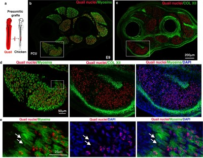 |
| Ion identity molecular networking for mass spectrometry-based metabolomics in the GNPS environment | Preference uncertainty accounts for developmental effects on susceptibility to peer influence in adolescence | Unexpected contribution of fibroblasts to muscle lineage as a mechanism for limb muscle patterning |
| 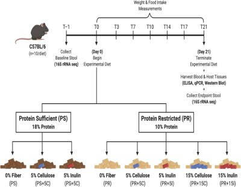 | 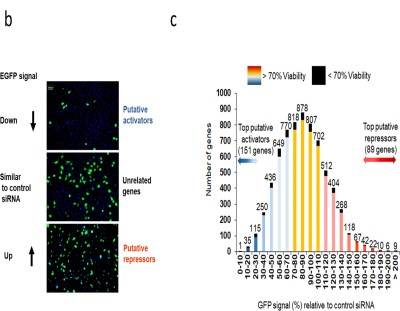 | 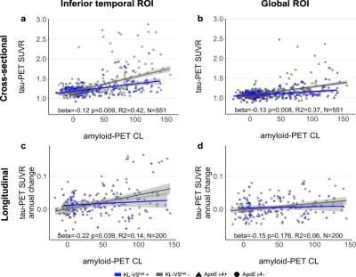 |
| Gut microbiota mediate the FGF21 adaptive stress response to chronic dietary protein-restriction in mice | Oncolytic H-1 parvovirus binds to sialic acid on laminins for cell attachment and entry | KL-VS heterozygosity is associated with lower amyloid-dependent tau accumulation and memory impairment in Alzheimer’s disease |
| 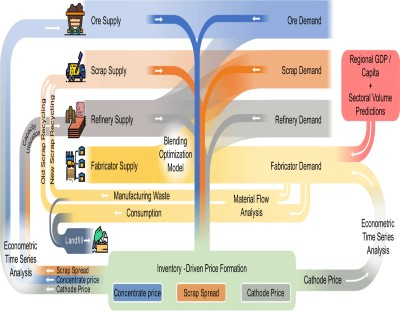 | 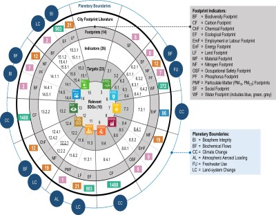 | 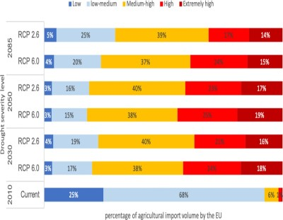 |
| Emission impacts of China’s solid waste import ban and COVID-19 in the copper supply chain | City footprints and SDGs provide untapped potential for assessing city sustainability | Cross-border climate vulnerabilities of the European Union to drought |
南京理工大学经济管理学院信管系
Copyright © 2021. NC新视野. All Rights Reserved.